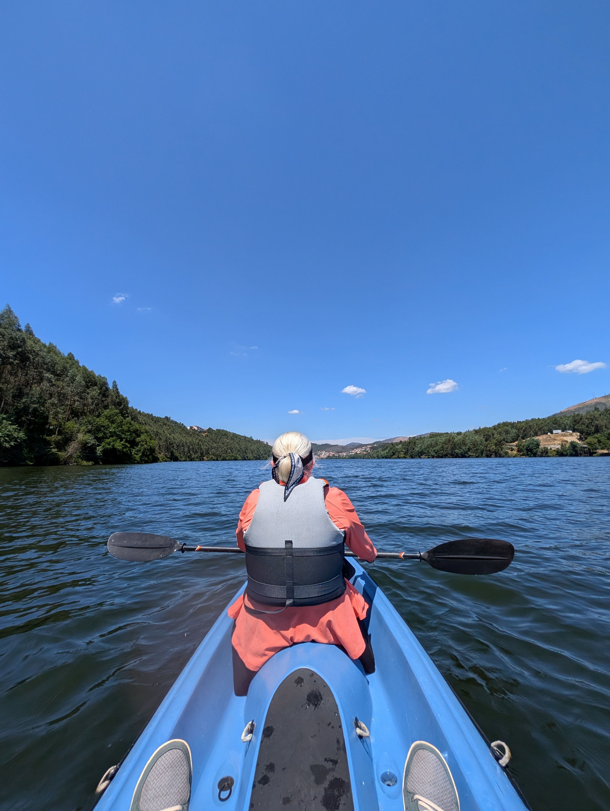
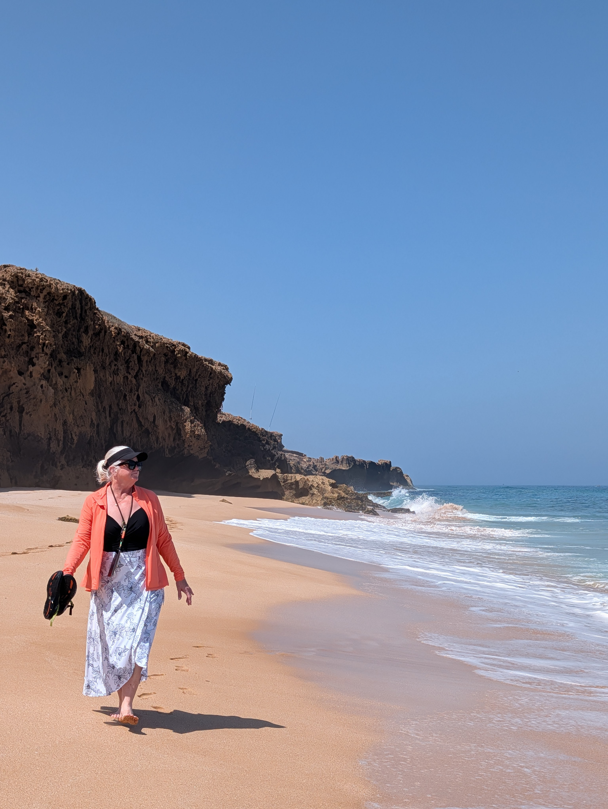

Goðafoss, Iceland
Goðafoss, IcelandThursdayGoðafoss, Iceland
The roar of Goðafoss. Midges at Mývatn. Steam rising from the earth at Hverir. An ordinary Thursday in Iceland.
 S/V Linden, East Greenland
S/V Linden, East GreenlandThursdayEast Greenland
Our last morning aboard the Linden. A week of fjords, icebergs, polar bears, long walks, and landscapes almost impossible to describe.
Then we packed our bags and waited for the airplane.
 Ittoqqortoormiit, Greenland
Ittoqqortoormiit, GreenlandThursdayIttoqqortoormiit, Greenland
Awake around five and topside for a beautiful morning. We were anchored off Ittoqqortoormiit.
We went ashore and walked the town.
 The Lygon Arms, Broadway, England
The Lygon Arms, Broadway, EnglandThursdayBroadway, England
Off the ship that morning and into the Cotswolds. One-lane roads, farms and countryside, a walk through Broadway, a burger and a pint.
Shirley spotted a dragon on a rooftop and decided our next house needs one.
 Stefany Taperia, Vigo, Spain
Stefany Taperia, Vigo, SpainThursdayVigo, Spain
Galician octopus, prawns, bread, a local beer, and €2.80 Albariño.
Nowhere else we needed to be. Nothing else we needed to be doing.
 Heckfield Place, Hampshire, England
Heckfield Place, Hampshire, EnglandThursdayHeckfield Place, Hampshire, England
We declined the bread.
Then the peach and burrata salad arrived, and we immediately asked for it back.
 São Lourenço do Barrocal, Alentejo, Portugal
São Lourenço do Barrocal, Alentejo, PortugalThursdaySão Lourenço do Barrocal, Alentejo, Portugal
A beer for me. A glass of wine for Shirley. A warm breeze, birds settling in for the night, and the sun disappearing over the Alentejo.
Shirley: “I've never been this comfortable.”

Douro River, PortugalThursdayDouro Valley, Portugal
The Douro outside our window. Riverboats passing by. Kayaking, paddleboarding, and a walk to a café.
We were beginning to wonder what it would be like to simply live this way for a while.

Oualidia, MoroccoThursdayOualidia, Morocco
A boat across the lagoon. Over the dunes to the Atlantic. For a while, we had the beach virtually to ourselves.
Then both soles fell off Shirley's sandals.
 Marrakech, Morocco
Marrakech, MoroccoThursdayMarrakech, Morocco
The Medina. Carved doors, patterned tile, rugs everywhere. We went into a gallery to look and came out having bought several.
Apparently we're decorating a home we don't have yet.